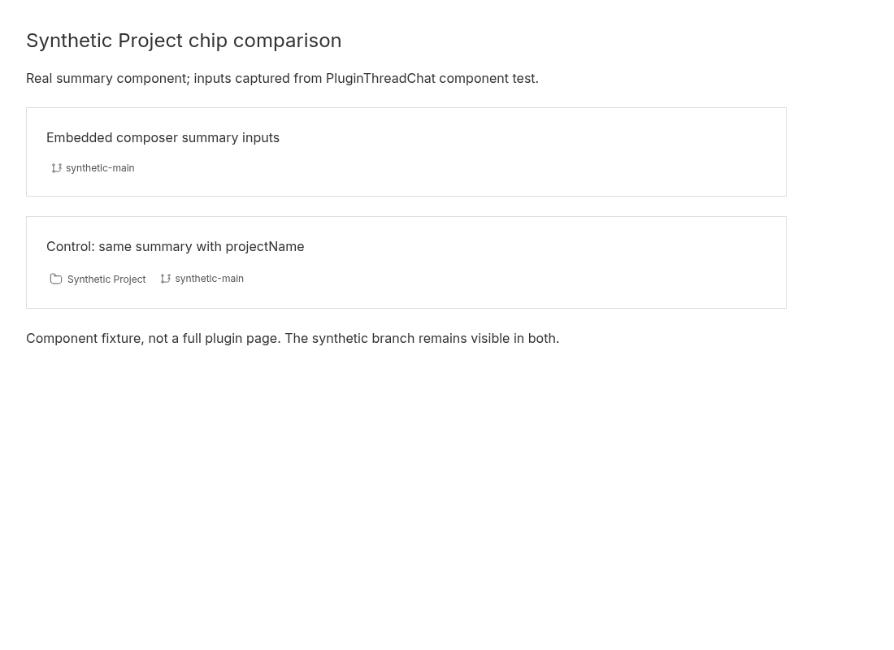

Plugin-embedded composer omits the Project chip
2026-09-30 · Bug · Low priority · Low effort
PARTIALLY REPRODUCED · High confidence in the tested component handoff and visible summary behavior.
Claim and observed scope
A plugin-embedded ThreadChat should identify its thread’s project in the composer summary. The actual PluginThreadChat, rendered through its existing plugin-slot test harness, receives a synthetic thread with projectId and an environment with a branch. It forwards projectId to EmbeddedThreadChat, but the environmentSummary React element has no projectName. The focused regression fails its expected project-name assertion; six existing tests pass.
A separate optimized browser fixture renders the actual ThreadEnvironmentSummary with the exact captured props. The embedded-input case shows only synthetic-main. A control adds projectName="Synthetic Project" and visibly shows the Project chip alongside the same branch. The same agent repeated both experiments in a second clean checkout at the identical recorded SHA, with fresh dependency installation, browser profile and ports.
This is a linked component test plus renderer fixture, not a full plugin-page/server reproduction. The component harness mocks SDK responses, subscriptions and the EmbeddedThreadChat child; the screenshot renders the real summary, not the entire composer. The control matches the main composer’s projectName contract but does not mount ThreadDetailPromptArea or exercise its project-name query. No third-party plugin, installed release, desktop shell, mobile viewport or user project was used. Provider checkout labeling and project rename/cache behavior were not tested. These limits make the verdict partial.
Expected and actual
Expected: a project-associated embedded composer supplies a display name and renders its Project chip. Actual: projectId remains proj_demo, branch remains synthetic-main, but summaryProps.projectName is undefined. Adding only a synthetic project display name to the summary inputs makes the chip visible. This is an omitted input, not a screenshot of a CSS-hidden chip.
Trusted base and environment
Public get-bb/bb origin/main: 2ffb754e7bc83d29607e6279a07eb1530a0e6cd6. Linux x86_64; Node 24.19.0; repository-pinned pnpm 9.15.0; Vitest 4.1.1; Vite 8.0.12 optimized fixture build; headless desktop Chromium 151.0.7922.173 at 1100×800 CSS pixels. Two separate detached worktrees, separate node_modules/caches/profiles, shared dependency download store. Both frozen installs and builds succeeded. No new dependency or production change.
Root cause and proposed fix
Embedded summary construction creates the summary without projectName, although thread.projectId is available. The summary’s Project branch renders only when that optional prop is truthy. In contrast, the main composer resolves a project display name and passes it into the summary. Proposed fix: resolve the embedded thread’s project display name using the shared project-name query and include it in the summary and memo dependencies. Add a component regression for the named-project case and a no-project/loading control. Then verify full plugin-page rendering, rename refresh and narrow layout. No fix was applied.
Repeatable procedure
Use two clean checkouts at the SHA below. Save the inline patch as regression.patch outside each checkout, and save the four browser-fixture files under apps/app/issue4501/. The captured JSON below is actual output from both component runs. Use the repository-pinned package manager; the execution environment selected pnpm 9.15.0 through its existing Corepack installation. The commands below preserve the executed flags with local directory names normalized; raw logs remain in the private work directory.
git clone https://github.com/get-bb/bb.git first cd first git checkout --detach 2ffb754e7bc83d29607e6279a07eb1530a0e6cd6 pnpm --version pnpm install --frozen-lockfile --store-dir ../dependency-store git apply ../regression.patch pnpm exec turbo run test --filter=@bb/app --force -- PluginThreadChat.test.tsx # Expected regression exit: 1; one failed project-name assertion, six passed controls. cd apps/app pnpm exec vite build --config issue4501/vite.config.ts python -m http.server 49211 --bind 127.0.0.1 --directory issue4501/dist # In separate terminals, with capture.mjs saved outside the checkout: chromium --headless --no-sandbox --disable-dev-shm-usage --disable-background-networking --remote-debugging-port=49212 --user-data-dir=../fresh-browser-first about:blank node capture.mjs 49212 49211 first-run # Repeat personally in clean second checkout at the same SHA, with the same patch/files. # Second run uses separate install/cache and browser profile, HTTP 49213, debugger 49214: node capture.mjs 49214 49213 second-run
Regression patch
diff --git a/apps/app/src/components/plugin/PluginThreadChat.test.tsx b/apps/app/src/components/plugin/PluginThreadChat.test.tsx
index 9943832e8..bc35e07d7 100644
--- a/apps/app/src/components/plugin/PluginThreadChat.test.tsx
+++ b/apps/app/src/components/plugin/PluginThreadChat.test.tsx
@@ -30,6 +30,7 @@ vi.mock("@/lib/sdk", () => ({
threads: { get: vi.fn() },
environments: { get: vi.fn() },
providers: { list: vi.fn(async () => []) },
+ hosts: { list: vi.fn(async () => []) },
},
BbHttpError: class BbHttpError extends Error {
status: number;
@@ -304,3 +305,20 @@ describe("PluginThreadChat", () => {
);
});
});
+
+
+it("4501 forwards project identity to the embedded composer summary", async () => {
+ vi.mocked(sdk.threads.get).mockResolvedValue({ ...THREAD_FIXTURE, environmentId: "env_synthetic" } as never);
+ vi.mocked(sdk.environments.get).mockResolvedValue({ id: "env_synthetic", environmentProviderId: null, path: "/synthetic/project", hostId: "host_synthetic", branchName: "synthetic-main" } as never);
+ const { wrapper: Wrapper } = createQueryClientTestHarness();
+ render(<Wrapper><MemoryRouter><PluginSlotMount pluginId="demo" slotKind="navPanel" slotId="page">
+ <DemoPluginPage threadId="thr_demo" />
+ </PluginSlotMount></MemoryRouter></Wrapper>);
+ await waitFor(() => expect(mocks.embeddedChatProps.at(-1)?.workspaceRootPath).toBe("/synthetic/project"));
+ const props = mocks.embeddedChatProps.at(-1)!;
+ const composer = props.composer as { environmentSummary: { props: Record<string, unknown> } };
+ expect(props.projectId).toBe("proj_demo");
+ expect(composer.environmentSummary.props.environmentCheckout).toBeTruthy();
+ console.log("ISSUE4501 " + JSON.stringify({projectId: props.projectId, summaryProps: composer.environmentSummary.props}));
+ expect(composer.environmentSummary.props.projectName).toBeTruthy();
+});
apps/app/issue4501/index.html
<!doctype html><html><head><meta charset="utf-8"><title>4501 synthetic composer summary</title></head><body><div id="root"></div><script type="module" src="/main.tsx"></script></body></html>
apps/app/issue4501/main.tsx
import React from "react";
import { createRoot } from "react-dom/client";
import { TooltipProvider } from "@bb/shared-ui/tooltip";
import { ThreadEnvironmentSummary } from "../src/components/promptbox/ThreadEnvironmentSummary";
import captured from "./captured.json";
import "../src/app.css";
const props = captured as React.ComponentProps<typeof ThreadEnvironmentSummary>;
createRoot(document.getElementById("root")!).render(<TooltipProvider><main style={{padding:32,maxWidth:1000}}>
<h1 style={{fontSize:24,marginBottom:16}}>Synthetic Project chip comparison</h1>
<p>Real summary component; inputs captured from PluginThreadChat component test.</p>
<section style={{padding:24,marginTop:24,border:"1px solid var(--border)"}}><h2>Embedded composer summary inputs</h2><div id="embedded" style={{marginTop:16}}><ThreadEnvironmentSummary {...props}/></div></section>
<section style={{padding:24,marginTop:24,border:"1px solid var(--border)"}}><h2>Control: same summary with projectName</h2><div id="control" style={{marginTop:16}}><ThreadEnvironmentSummary {...props} projectName="Synthetic Project"/></div></section>
<p style={{marginTop:24}}>Component fixture, not a full plugin page. The synthetic branch remains visible in both.</p>
</main></TooltipProvider>);
apps/app/issue4501/captured.json
{
"environmentCheckout": {
"copyErrorMessage": "Failed to copy branch name",
"copyLabel": "Copy branch name",
"copySuccessMessage": "Branch name copied",
"copyValue": "synthetic-main",
"label": "synthetic-main",
"rowLabel": "Branch",
"title": "Copy branch name: synthetic-main"
}
}
apps/app/issue4501/vite.config.ts
import { defineConfig } from "vite";
import { sharedViteConfig } from "../vite.config";
export default defineConfig({ ...sharedViteConfig, root: __dirname, plugins: sharedViteConfig.plugins.filter(plugin => !["bb:font-preload", "bb:split-prefetch"].includes(plugin.name)), build: { ...sharedViteConfig.build, outDir: "dist", emptyOutDir: true } });
capture.mjs — actual browser assertions and screenshot capture
import { writeFile } from 'node:fs/promises';
const [debugPort,appPort,output]=process.argv.slice(2);
const tabs=await(await fetch(`http://127.0.0.1:${debugPort}/json/list`)).json();
const ws=new WebSocket(tabs.find(t=>t.type==='page').webSocketDebuggerUrl);
await new Promise(r=>ws.addEventListener('open',r,{once:true}));let id=0;const pending=new Map();
ws.addEventListener('message',event=>{const x=JSON.parse(event.data);if(x.id){const p=pending.get(x.id);pending.delete(x.id);x.error?p.reject(new Error(JSON.stringify(x.error))):p.resolve(x.result);}});
const call=(method,params={})=>new Promise((resolve,reject)=>{const serial=++id;pending.set(serial,{resolve,reject});ws.send(JSON.stringify({id:serial,method,params}));});
const evaluate=async expression=>{const x=await call('Runtime.evaluate',{expression,returnByValue:true,awaitPromise:true});if(x.exceptionDetails)throw new Error(JSON.stringify(x.exceptionDetails));return x.result.value;};
await call('Page.enable');await call('Runtime.enable');await call('Network.enable');await call('Network.setCacheDisabled',{cacheDisabled:true});
await call('Emulation.setDeviceMetricsOverride',{width:1100,height:800,deviceScaleFactor:1,mobile:false});
const errors=[];
ws.addEventListener('message',event=>{const x=JSON.parse(event.data);if(x.method==='Runtime.exceptionThrown')errors.push(x.params.exceptionDetails.text+': '+(x.params.exceptionDetails.exception?.description??''));});
await call('Page.navigate',{url:`http://127.0.0.1:${appPort}/`});
await new Promise(r=>setTimeout(r,3000));
const result=await evaluate(`({embedded:document.getElementById('embedded')?.innerText,control:document.getElementById('control')?.innerText})`);
if(result.embedded?.includes('Synthetic Project') || !result.control?.includes('Synthetic Project') || !result.embedded?.includes('synthetic-main') || !result.control?.includes('synthetic-main') || errors.length)throw new Error(JSON.stringify({result,errors}));
const screenshot=await call('Page.captureScreenshot',{format:'png',captureBeyondViewport:false});await writeFile(output+'.png',Buffer.from(screenshot.data,'base64'));
const evidence={...result,browser:await call('Browser.getVersion'),viewport:{width:1100,height:800},errors};await writeFile(output+'.json',JSON.stringify(evidence,null,2));console.log(JSON.stringify(evidence));ws.close();
Same-agent second clean reproduction and actual evidence
Both test runs executed with --force; neither reused test results. Both emitted identical captured props and the same single regression failure. Both browser runs exited successfully, found no browser runtime exceptions, retained the branch in both cases and found Synthetic Project only in the control. Both screenshots were inspected. This is same-agent verification, not independent verification.
first clean run
@bb/app:test: ISSUE4501 {"projectId":"proj_demo","summaryProps":{"environmentCheckout":{"copyErrorMessage":"Failed to copy branch name","copyLabel":"Copy branch name","copySuccessMessage":"Branch name copied","copyValue":"synthetic-main","label":"synthetic-main","rowLabel":"Branch","title":"Copy branch name: synthetic-main"}}}
@bb/app:test: ⎯⎯⎯⎯⎯⎯⎯ Failed Tests 1 ⎯⎯⎯⎯⎯⎯⎯
@bb/app:test: AssertionError: expected undefined to be truthy
@bb/app:test: 322| console.log("ISSUE4501 " + JSON.stringify({projectId: props.projectI…
@bb/app:test: Test Files 1 failed (1)
@bb/app:test: Tests 1 failed | 6 passed (7)
@bb/app:test: Duration 4.68s (transform 2.47s, setup 140ms, import 3.68s, tests 163ms, environment 552ms)
{
"embedded": "synthetic-main",
"control": "Project:\nSynthetic Project\nsynthetic-main",
"browser": {
"protocolVersion": "1.3",
"product": "Chrome/151.0.7922.173",
"revision": "@a96602f30358e9b5d256a0464e7e4d4bec223004",
"userAgent": "Mozilla/5.0 (X11; Linux x86_64) AppleWebKit/537.36 (KHTML, like Gecko) HeadlessChrome/151.0.0.0 Safari/537.36",
"jsVersion": "15.1.206.23"
},
"viewport": {
"width": 1100,
"height": 800
},
"errors": []
}

second clean run
@bb/app:test: ISSUE4501 {"projectId":"proj_demo","summaryProps":{"environmentCheckout":{"copyErrorMessage":"Failed to copy branch name","copyLabel":"Copy branch name","copySuccessMessage":"Branch name copied","copyValue":"synthetic-main","label":"synthetic-main","rowLabel":"Branch","title":"Copy branch name: synthetic-main"}}}
@bb/app:test: ⎯⎯⎯⎯⎯⎯⎯ Failed Tests 1 ⎯⎯⎯⎯⎯⎯⎯
@bb/app:test: AssertionError: expected undefined to be truthy
@bb/app:test: 322| console.log("ISSUE4501 " + JSON.stringify({projectId: props.projectI…
@bb/app:test: Test Files 1 failed (1)
@bb/app:test: Tests 1 failed | 6 passed (7)
@bb/app:test: Duration 4.86s (transform 2.53s, setup 132ms, import 3.85s, tests 176ms, environment 557ms)
{
"embedded": "synthetic-main",
"control": "Project:\nSynthetic Project\nsynthetic-main",
"browser": {
"protocolVersion": "1.3",
"product": "Chrome/151.0.7922.173",
"revision": "@a96602f30358e9b5d256a0464e7e4d4bec223004",
"userAgent": "Mozilla/5.0 (X11; Linux x86_64) AppleWebKit/537.36 (KHTML, like Gecko) HeadlessChrome/151.0.0.0 Safari/537.36",
"jsVersion": "15.1.206.23"
},
"viewport": {
"width": 1100,
"height": 800
},
"errors": []
}

Corrections, safety and remaining verification
An initial exploratory fixture omitted environmentProviderId, producing a misleading “undefined (not installed)” label. The retained fixture explicitly sets it to null; both final clean runs use this corrected fixture and the screenshots show its branch-only summary. This correction does not supply or change projectName. No claim about generic Project Checkout labeling is based on that exploratory run.
Issue content, including reproduction suggestions and external plugin references, was treated as untrusted claims only. No issue command, external plugin URL, supplied patch or branch was executed. The test was derived from trusted main code. All data is synthetic, and browser navigation was confined to loopback. Public output contains only inline source/evidence and genuine screenshots. Full installed plugin-page behavior remains an open verification gap; this report does not mark the backlog caught up.